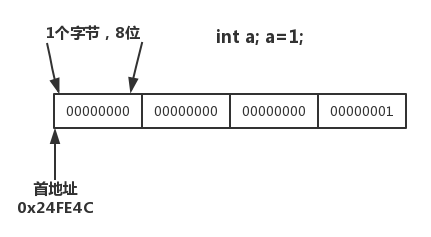

前言：
指针是C语言程序的核心，刚开始学指针，嗯....这样呀，貌似不难呀；之后开始用指针，&p,p,*p,**p,这些指针在用的时候，额.....什么东东？每次都要想半天，特别是遇到双重指针，脑子直接卡住；
什么是指针？
指针是一个变量，其值为另一个变量的地址，即，内存位置的直接地址。就像其他变量或常量一样，您必须在使用指针存储其他变量地址之前，对其进行声明。
指针内在的关联
#include <stdio.h>
int main()
{
int a;
int *p;
a = 1;
p = &a;
printf("变量a的内存地址是:0x%X \n",&a);
printf("变量a存储的值:%d \n",a);
printf("指针p的内存地址是:0x%X \n",&p);
printf("指针p存储的地址是:0x%X \n",p);
printf("指针p指向地址的值:%d \n",*p);
} 执行输出
变量a的内存地址是:0x24FE4C
变量a存储的值:1
指针p的内存地址是:0x24FE40
指针p存储的地址是:0x24FE4C
指针p指向地址的值:1能把上面代码理解，那么指针基础内容也就掌握了；首先int a；a=1; 声明一个int类型。声明一个变量就相当于申请一段存储空间，一个存储空间你要让我想办法找到它，好吧就给你一个起始地址（因为一段存储空间不止一位，所以给存储的起始地址来索引）。这个地址就是一个数字，假设我们这里的数字是0x24FE4C，这个数字就是a的内存地址；这块存储空间占用4个字节（int类型是4字节），而且存储的值为1。

int *p; 就是声明一个指针变量, 存储的是一个地址，也可以说存储一个数字，这个数字代表计算机中存储器的位置。
p=&a; &a就是取a的地址（起始地址），a的起始地址是0x24FE4C，然后我们把这个数字赋值给p变量，现在p的值就是0x24FE4C。当然p是一段存储空间，它的地址是0x24FE40。
#include <stdio.h>
int main()
{
int a;
int *p;
int b;
a = 1;
p = &a;
*p = 10;
printf("变量a存储的值:%d \n",a);
printf("变量a的内存地址是:0x%X \n",&a);
}
//变量a存储的值:10
//变量a的内存地址是:0x24FE44
很显然赋值可以生效，而且变量a的内存地址也进行了更改
点击=》指针的指针
在变量声明的时候，如果没有确切的地址可以赋值，为指针变量赋一个 NULL 值是一个良好的编程习惯。赋为 NULL 值的指针被称为空指针。
NULL 指针是一个定义在标准库中的值为零的常量。请看下面的程序：
#include <stdio.h>
int main ()
{
int *ptr = NULL;
printf("ptr 的地址是 %p\n", ptr );
return 0;
}
//ptr 的地址是 0000000000000000
在大多数的操作系统上，程序不允许访问地址为 0 的内存，因为该内存是操作系统保留的。然而，内存地址 0 有特别重要的意义，它表明该指针不指向一个可访问的内存位置。但按照惯例，如果指针包含空值（零值），则假定它不指向任何东西。
如需检查一个空指针，您可以使用 if 语句，如下所示：
if(ptr) /* 如果 p 非空，则完成 */
if(!ptr) /* 如果 p 为空，则完成 */
C 语言允许您传递指针给函数，只需要简单地声明函数参数为指针类型即可。
下面的实例中，我们传递一个无符号的 long 型指针给函数，并在函数内改变这个值：
#include <stdio.h>
#include <time.h>
void getSeconds(unsigned long *par);
int main ()
{
unsigned long sec;
getSeconds( &sec );
/* 输出实际值 */
printf("Number of seconds: %ld\n", sec );
return 0;
}
void getSeconds(unsigned long *par)
{
/* 获取当前的秒数 */
*par = time( NULL );
return;
}
//Number of seconds: 1563865435
能接受指针作为参数的函数，也能接受数组作为参数，如下所示：
#include <stdio.h>
/* 函数声明 */
double getAverage(int *arr, int size);
int main ()
{
/* 带有 5 个元素的整型数组 */
int balance[5] = {1000, 2, 3, 17, 50};
double avg;
/* 传递一个指向数组的指针作为参数 */
avg = getAverage( balance, 5 ) ;
/* 输出返回值 */
printf("Average value is: %f\n", avg );
return 0;
}
double getAverage(int *arr, int size)
{
int i, sum = 0;
double avg;
for (i = 0; i < size; ++i)
{
sum += arr[i];
}
avg = (double)sum / size;
return avg;
}
//Average value is: 214.400000
int func(int *p) 在函数中，此时的p表示一个内存地址，*p表示内存地址的值 记住！！